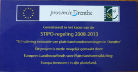

De boerderij
Onze boerderij ligt aan de Vaart Noordzijde 186 tussen Erica en Nieuw Amsterdam.
De
aspergevelden liggen op zandgronden en hebben volgens onze vaste klanten een zachte,
iets zoete
smaak. Bepalend voor deze smaak is onder andere de manier waarop we onze asperges verzorgen.
De oogst
Het oogsten van onze witte asperges is puur handwerk. We halen de asperges met
een speciaal
steekmes uit de grond
.
De
asperges worden na het oogsten gekoeld in fris water. Na een aantal uren
worden de asperges gewassen en gesorteerd. We werken met een automatische sorteermachine,
zodat de asperges nóg gedetailleerder gesorteerd kunnen worden. De mooiste asperges komen in
klasse I. Minder mooie in klasse II
.
Schillen
Het schillen van de asperges hoeft u niet zelf meer te doen. Dankzij onze schilmachine kunt u onze
asperges vers en goed geschild meenemen. Zo kunt u heel snel een gezonde maaltijd
op tafel zetten.
Wilt u de asperges een paar dagen geschild bewaren dan kunt u ze ook laten verpakken
in bakjes met
een speciale folie. In de koelkast blijven ze nog één week houdbaar. Voor degenen die een voorraad
in de diepvries willen aanleggen zijn deze bakjes ook erg handig. Wanneer u asperges uit de diepvries
wilt gaan gebruiken wel eerst het water koken, daarna de bevroren asperges in het kokende water
doen. De kooktijd bij asperges uit de diepvries is een minuut korter.
De winkel
Naast onze asperges verkopen we allerlei toebehoren, zodat u van iedere aspergemaaltijd een
feestje kunt maken. Ook bij de keuze van deze producten staat bij ons kwaliteit voorop en daarom
hebben we met zorg wijnen, sausjes, geschrapte krielaardappeltjes, soepen, asperge-ijs e.d.
uitgekozen. Onze ham komt steeds vers van de slager en de zalm van de visboer. Ons assortiment
blijft groeien en inmiddels verkopen we steeds meer streekproducten
.
Cadeaupakket
Wanneer u een cadeau voor iemand zoekt dan kunt u ook hiervoor bij ons terecht. Wij stellen voor u
een cadeaupakket samen en pakken dit mooi in. Deze pakketten zijn in allerlei prijsklassen samen te
stellen.
Gezond
Asperges zijn erg gezond. Ze zijn rijk aan vitamines en mineralen en bevatten weinig calorieën.
Asperges zijn vocht afdrijvend en daarmee goed voor de nieren. Van celdeling tot immuunsysteem,
van bloedstolling tot huid en van haar tot botten; asperges zijn goed voor het hele lijf!
"Dit bedrijf is aangesloten bij Telersvereniging ZON, de verkoop van onze producten geschiedt via ZON fruit & vegetables. "


|